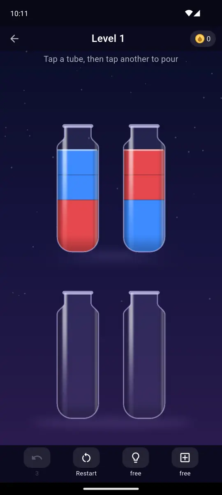
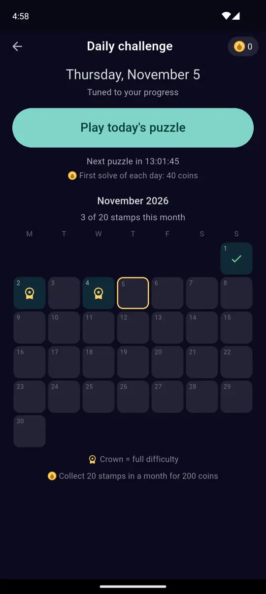
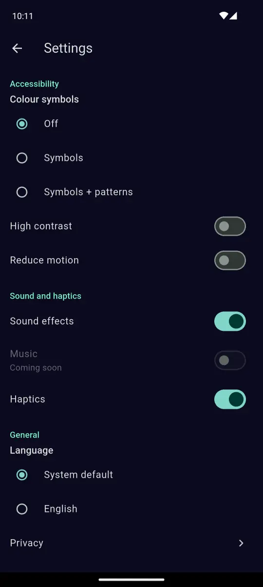

Glassly: Water Sort Puzzle
A calm water sort puzzle: pour, match, and unwind.
Not live yet. The button will open the store page once the game is published.
About
Glassly is a single-player puzzle game for Android. Tap a glass to pick it up, tap another to pour, and sort the colours until every glass holds just one. Normal levels have no timer and no move limit, so you can play at your own pace.
Features
- 500 levels across five packs, easing in gently.
- Daily challenge with a monthly stamp calendar and a coin reward for collecting stamps.
- Day streaks with a free streak freeze each week that covers one missed day.
- Undo, hints and an extra glass for when you are stuck.
- Colourblind-friendly: free colour symbols (optionally with patterns), plus high contrast and reduce motion options.
- Plays offline, with your progress saved on your device.
- Calm by design: sound effects and haptics you can switch off any time.
Screenshots




Get the game
Join the early test
Want to try Glassly before launch? Early testers get the game on Google Play ahead of everyone else and help shape it.
Email us to join the early test
Send us the Google account email you use on Play and we will add you.
FAQ
Is Glassly free?
Yes, it is free to download. Ads can appear while you are online; none appear while you are offline, and none are forced on you in the early levels.
Does it work offline?
Yes. You can play without an internet connection, and your progress is saved on your device.
Is there a colourblind mode?
Yes, and it is free. Turn on colour symbols in Settings under Accessibility to add a small shape to each colour, or choose symbols with patterns.
What about my data and privacy?
We keep it minimal and explain exactly what is collected in the Privacy Policy.
How do I join the early test?
Use the “Join the early test” box above. Until the sign-up link is ready, email gayenbd@gmail.com.
How do I contact you?
Email gayenbd@gmail.com for support, feedback or bug reports.